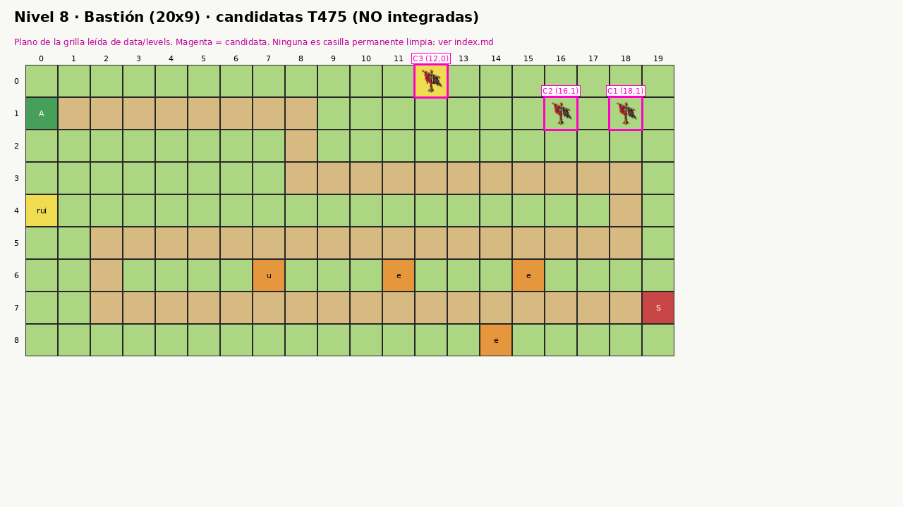
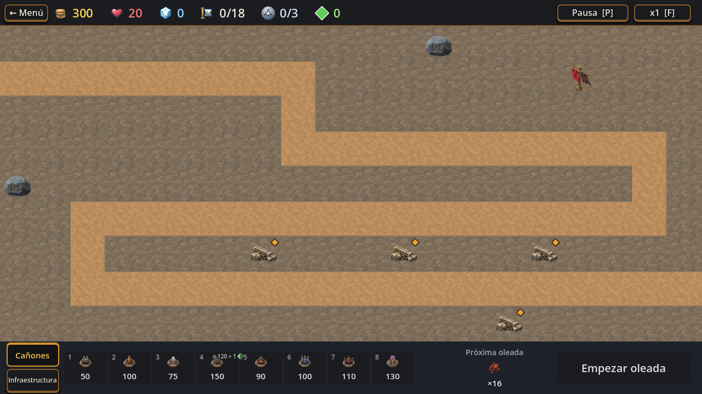
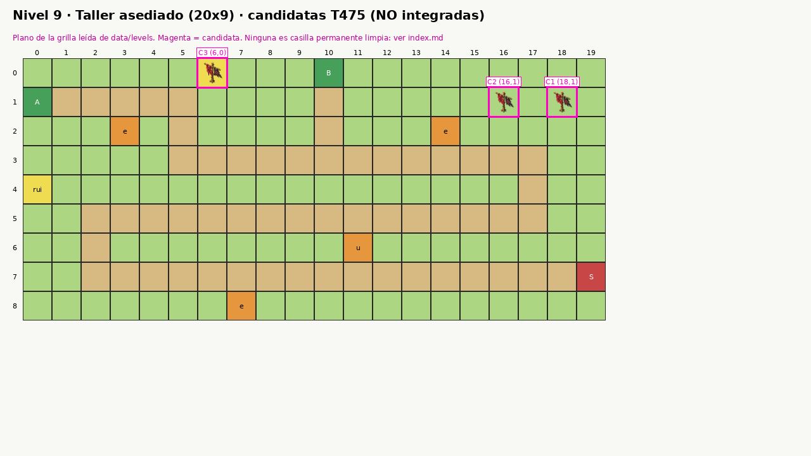
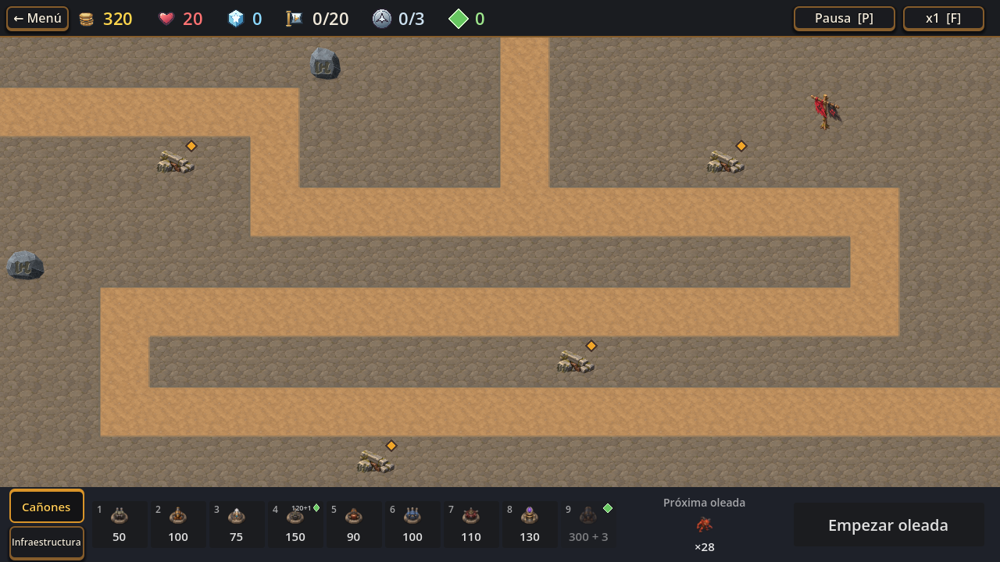
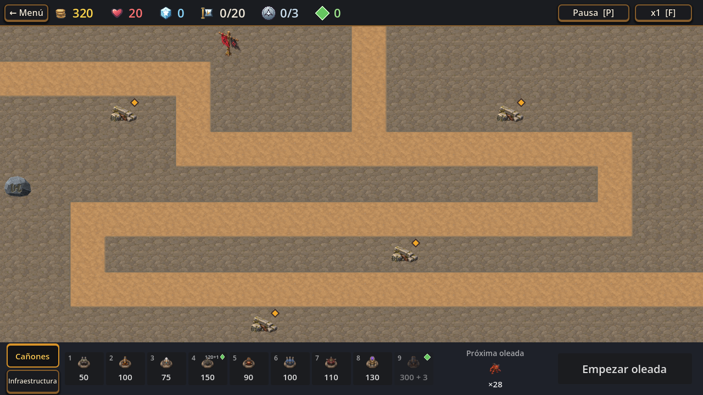

T475 · Candidatas de casilla para los niveles 8 y 9
No integradas. No existe una casilla limpia en ninguno de los dos mapas (todo es camino, removible, señal o casilla libre). Recomendación: dejar los dos niveles sin poste, o elegir C1 (18,1) sobre una casilla libre. Detalle en index.md.
Nivel 8 · Bastión

Plano (grilla leída de los JSON)C1 (18,1) · casilla libre, margen 1 · primera opción

C2 (16,1) · casilla libre, margen 1C3 (12,0) · tapa el símbolo de ruina · no recomendada
Nivel 9 · Taller asediado

PlanoC1 (18,1) · casilla libre, margen 1 · primera opción

C2 (16,1) · casilla libre, margen 1

C3 (6,0) · tapa el símbolo de ruina · no recomendada